ROTTERDAM SCOUTS FOOD DRIVE
TODAY


Drop off food for our neighbors
OPEN10 AM to 2 PM
Rotterdam Community Center, 705 Curry Rd
MOST NEEDED
Canned fruitCanned veggiesBeansRiceEgg noodles
Mac and cheeseSloppy joe sauceShelf-stable milkLunchbox snacksHot drink packets